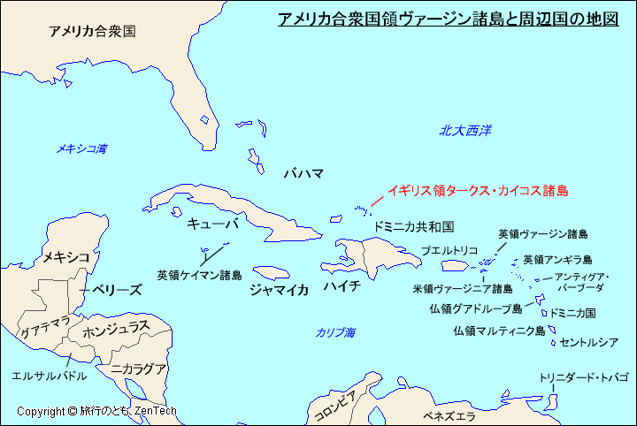
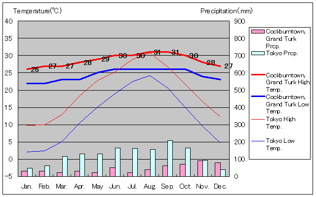
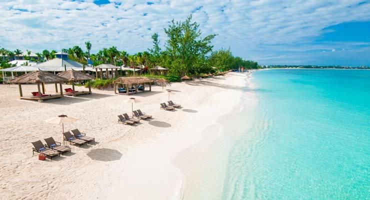
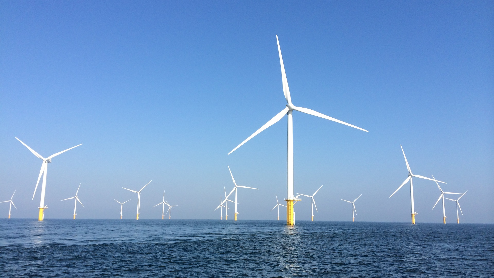

タークス・カイコス諸島は、カリブ海のイギリス海外領土の島
タークス・カイコス諸島の気候は熱帯海洋です。
 タークス・カイコス諸島 (TCI) は、ターコイズブルーの海と細かい砂浜、世界クラスのダイビングとシュノーケリング、
洗練されたシェフが手がけるグルメなど、カリブ海での完璧な休暇に必要なすべての要素に恵まれています。
ロングベイビーチでは白い砂浜と浅いターコイズブルーの海が特徴的です。
観光客もたくさん訪れることから観光業が盛んになっています。
美しい砂浜が広がるリーワード ビーチは、素晴らしい水泳の機会がある自然のままのビーチです。
グレース ベイ ビーチほど混雑しておらず、リラックスした休暇を過ごすための人里離れた場所を探している家族連れに最適な場所です。
新たに独立したアメリカから逃げてきたロイヤリストはカイコス諸島に綿花プランテーションを設立しました。
1834年にイギリス植民地で奴隷制度が廃止され、多くのプランテーション所有者が逃げたが、労働者は留まりました。
彼らの文化はアフリカの伝統、イギリス統治、カリブ海の影響が独自に組み合わさったものです。
カリブ海での休暇でレゲエなどを聴くのが旅行者の予想ですが、
タークス・カイコス諸島ではリップソー音楽が地元の音楽で、普通の手鋸を曲げて、釘やナイフを歯にこすりつけて演奏します。
上の画像は、リップソー音楽で盛り上がる、
プロボのバイトパークで木曜日の夜に開催される人気のイベントで、この人は、ジャンカヌーお祝いの衣装を身に着けています。
イギリスでは、2030年CO2削減目標を68％に引き上げ、洋上風力発電などに力を入れています。
